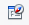

Activitats
Creació d'un formulari amb l'assistent
L’objectiu d’aquesta activitat és aprendre a crear un formulari senzill de la taula Clients.
Utilitzareu l’arxiu
Feu clic al botó Formularis, a la dreta de la finestra de base de dades. Un cop a la finestra de formularis, escolliu Crea un formulari utilitzant l’auxiliar… Seguiu les pantalles de l’assistent que se us obrirà per dissenyar un autoformulari de la taula Clients. Escolliu la disposició Columnar - Etiquetes a l’esquerra i la vista en 3D.
Si voleu canviar el color de fons del formulari o, fins i tot, substituir-lo per una imatge, feu clic amb el botó dret sobre qualsevol espai buit i seleccioneu la comanda Pàgina. Seleccioneu la pestanya Fons i en la llista desplegable Com a trieu si voleu utilitzar un color o un gràfic de fons.
Creació d'un formulari en vista disseny
L’objectiu d’aquesta activitat és aprendre a crear un formulari senzill de la taula Categories.
Utilitzareu l’arxiu
Si trieu l’opció Crea un formulari en la vista disseny… s’obrirà la finestra de disseny i el quadre d’eines en el qual hi ha els controls que es poden inserir en el formulari per tal que creeu manualment el formulari. Vegeu la figura figura
Si els camps del control del formulari no apareixen, feu clic a Veure/Barra d’eines/Camps de control del formulari en el qual teniu els botons més utilitzats per al disseny d’un formulari:
- Selecció: activa/desactiva l’eina Selecció que permet seleccionar qualsevol dels camps que teniu inserits en el formulari.
- Mode disseny: activa/desactiva el Mode disseny que permet activar el formulari per introduir-hi elements o bé desactivar-lo. En cas de desactivar-lo, no es podran inserir elements.
- Casella de selecció: s’utilitza quan es vol desar un Sí o un No.
- Quadre de text: insereix un quadre de text.
- Camp formatat: permet inserir un camp formatat.
- Botó: insereix un botó que executarà una acció determinada.
- Botó d’opció: s’utilitza quan cal triar un valor entre un grup de valors.
- Quadre de llista: mostra una llista de valors on es pot seleccionar el valor corresponent en cada cas.
- Quadre combinat: mostra una llista desplegable on es pot seleccionar el valor corresponent en cada cas.
- Camp d’etiqueta: insereix una etiqueta al formulari.
- Més camps de control: permet veure més camps de control que poden ser útils en la creació del formulari.
Procediment
1. Obriu la base de dades.
2. Seleccioneu Objectes/Formulari i escolliu la tasca Crear formulari en vista disseny.
3. Deseu-lo amb el nom FormCategories.
4. En la vista disseny, cliqueu el botó Camp d’etiqueta, cliqueu el cos del formulari i dibuixeu un rectangle com podeu veure a la figura.
5. Establiu les propietats següents:
- Tipus de lletra: Verdana, negreta, mida 18.
- Nom etiqueta: categories existents.
6. Introduiu un nou camp etiqueta anomenat Categoria, i al seu costat poseu-hi un camp de text, que permetrà veure els números de categories que anirà assignant el sistema. Si teniu algun problema a l’hora de situar el quadre de text en la posició que necessiteu, podeu ancorar el caràcter que apareix seleccionant en l’opció Ancorar del menú Contextual. Podeu veure el resultat a la figura.
7. Establiu les propietats següents:
- Tipus de lletra: Verdana, negreta, mida 14, cursiva.
- Nom etiqueta: categoria.
- Vores: gris al 80%.
- Per assignar el color de fons desitjat al formulari, feu clic sobre el botó dret en un lloc lliure del formulari i indiquem l’opció Pàgina. A continuació, aneu a la pestanya Fons i trieu el color verd pastel.
- Origen de dades del formulari: taula Categories.
- Origen de dades del camp de text: IdCategoria.
Per establir l’origen de dades recordeu seleccionar la pestanya Dades del menú contextual Propietats.
8. Executeu el formulari i com a resultat obtindreu la figura.
Creació d'un formulari amb subformulari
L’objectiu d’aquesta activitat és aprendre a crear un formulari que relacioni les comandes rebudes amb el contingut de cada comanda.
Utilitzareu l’arxiu
Procediment
- Obriu l’assistent.
- Seleccioneu la taula Comandes.
- Seleccioneu els camps IdComanda, Data, IdClient.
- Al pas següent, activeu la casella Afegir un subformulari.
- Al tercer pas escollireu la taula Detall_comanda i escollireu els camps Quantitat, Preu i Referència. El camp IdComanda no cal ja que formarà part del formulari principal.
- Establiu la distribució dels camps i escolliu un color de fons.
- Modifiqueu l’ordre de les columnes del subformulari tal com mostra la figura figura.
Utilitzeu els botons de la Barra de navegació del formulari per visualitzar el resultat vinculat entre cada comanda i els productes que la formen.
Creació de quadres de llista en un formulari
L’objectiu d’aquesta activitat és modificar el disseny dels formularis realitzats de forma automàtica per tal de facilitar la introducció de dades.
Recupereu el fitxer
Procediment:
1. Obriu el formulari Form_detall_comanda en la vista disseny.
2. Escolliu el botó de control Quadre de llista
3. S’obrirà l’assistent del control quadre de llista. Escolliu la taula Clients i premeu Següent, d’acord amb la imatge figura:
4. Seleccioneu el camp que voleu visualitzar a la pantalla que mostra la imatge figura, en aquest cas Cognoms.
5. Configureu el vincle existent entre la taula Comandes i la taula Clients. Configureu la relació existent entre el que es vol mostrar al quadre de llista i el formulari. En el nostre cas IdClient, tal com es mostra a la imatge figura.
6. Finalitzeu i tanqueu el formulari. Si deseu els canvis i obriu el formulari podreu comprovar que el vostre quadre funciona perfectament. Quan poseu el codi d’un client us mostra el seu cognom al quadre que acabeu de crear.
7. Esborreu el quadre de text del camp IdClient, seleccionant-lo prèviament amb la tecla Ctrl, i substituïu-lo per un nou quadre de llista que mostri el nom del client, seguint el mateix procediment que heu utilitzat per al camp Cognoms.
8. Canvieu el títol de l’etiqueta IdClient per Client i modifiqueu el color i vores dels quadres de llista per tal que quedin tots iguals. El resultat ha de ser semblant a la figura figura.
Podeu veure les diferents propietats dels botons a la figura figura.
Creació d'un quadre llista en un subformulari
L’objectiu d’aquesta activitat és modificar el disseny d’un subformulari realitzat de forma automàtica per tal de facilitar la introducció de dades.
Procediment
1. Recupereu el fitxer
2. A la graella del subformulari hi ha 3 columnes: Referència, Quantitat, i Preu, i voleu que en lloc de la referència es mostri el nom del producte i es pugui escollir d’una llista.
3. Seleccioneu la columna Referència i amb el botó dret del ratolí, escolliu Suprimeix la columna al menú contextual.
4. Creareu una columna nova que serà el quadre llista per mostrar els productes. Cliqueu sobre la columna Quantitat i al botó dret del ratolí, escolliu Insereix una columna i a continuació Quadre de llista com mostra la imatge figura:

5. Apareix una columna nova amb el nom Quadre llista 1 que cal configurar.
6. Seleccioneu la columna Quadre llista 1 i amb el botó dret del ratolí, escolliu Columna i en obrir les Propietats: Quadre de llista, modificareu els següents paràmetres:
- Dades / Camp de dades: cal indicar la dada que voleu mostrar al subformulari, en el cas que ens ocupa, la dada que heu d’escollir és Referència.
- Tipus de contingut de la llista: pot venir de diverses fonts; llista de valors, taula, consulta, SQL o camp de taula. Escolliu SQL ja que voleu obtenir el nom del producte de la taula Productes i que el seu codi estigui enllaçat amb la taula Detall comandes.
- Contingut de la llista: com que heu definit l’origen SQL, premeu el botóque figura a l’opció Contingut de la llista per realitzar una consulta. Escolliu la taula Productes i seleccioneu els camps Nom i Referència com mostra la imatge figura. Un cop finalitzada la consulta la deseu i tanqueu la pantalla.
- Camp lligat: és el camp que ha de mostrar la llista. Indiqueu el valor 1. Aquesta acció permet vincular la Referencia de la taula Productes amb Referencia de la taula Detall comanda. Podeu veure el resultat a la figura.
- Sense tancar la fitxa de propietats, premeu la pestanya General i modifiqueu-ne els paràmetres especificats. Etiqueta: Nom del producte, Amplada: 7,00cm.
- Un cop realitzades les modificacions, tanqueu la pantalla i deseu els canvis. En tancar el formulari i tornar-lo a obrir observareu que es poden seleccionar els productes dins de la graella de dades (subformulari). Podeu veure el resultat a la figura
Creació d'un camp calculat
L’objectiu d’aquesta activitat és crear un camp calculat en un subformulari.
Afegireu un nou camp al subformulari que calculi de forma automàtica el cost (quantitat × preu) de cada article que s’afegeixi al subformulari.
Procediment
1. Recupereu el fitxer
2. Observeu que a la pestanya Dades l’origen és la taula Detall_Comanda que inclou els camps: IdComanda, Referència, Quantitat i Preu. No podeu afegir-hi un camp calculat perquè aquesta acció suposaria modificar la taula. La solució consisteix a canviar l’origen de dades per una consulta SQL, que us permetrà realitzar les mateixes operacions que en una taula i, a més, hi podreu incloure un camp calculat. L’opció Tipus de contingut de la fitxa de Propietats del formulari, pestanya Dades ofereix tres posssibilitats:
- Taula: per seleccionar una taula
- Consulta: per seleccionar una consulta ja creada
- Ordre SQL: per crear una nova consulta
Modifiqueu l’opció Tipus de contingut, de la fitxa de propietats del subformulari, canvieu-la per Ordre SQL i premeu el botó
3. A la pantalla de disseny de la consulta escolliu la taula Detall_Comanda i seleccioneu els camps IdComanda, Referència, Quantitat, i Preu. Al final de la graella de la consulta definiu un camp calculat a partir de l’operació quantitat*preu.
- Camp: Quantitat*Preu
- Àlies: Subtotal
- Taula: Detall de comanda
- Visible: Activat.
La pantalla de disseny ha de quedar configurada tal com mostra la imatge figura
4. Un cop definit el camp calculat deseu les dades i tanqueu la pantalla de creació de consultes. Tornareu a la finestra Propietats del formulari, i veureu que l’origen de les dades ja ha canviat. La finestra s’ha transformat d’acord amb la imatge figura:
5. Tanqueu la finestra de Propietats del formulari i afegiu una nova columna a la graella de dades. Feu clic amb el botó dret als costat del camp Preu, escolliu Insereix una columna i, a continuació, Camp formatat. Heu d’escollir aquesta última opció en lloc de Quadre de text per així poder definir com voleu visualitzar el nou camp.
6. Apareixerà una nova columna amb el nom Quadre de text 1 i caldrà configurar-la per tal que mostri el nou camp calculat. Situeu-vos sobre la nova columna, premeu el botó dret del ratolí i seleccioneu l’opció Columna del menú contextual. Us apareixerà la finestra Propietats: Camp formatat. Situeu-vos a la pestanya Dades, obriu el desplegable de l’opció Camp de dades i seleccioneu el camp calculat que acabeu de crear. La finestra de propietats ha de quedar configurada tal com mostra la imatge figura.
7. Accediu a la pestanya General i feu que el títol de la columna sigui Subtotal del producte. A l’opció Només lectura poseu-hi Sí, per tal que no s’hi pugui escriure. A continuació definiu el format de les dades. Aneu a l’opció Formatació i premeu el botó
La finestra Propietats: camp formatat ha de quedar tal com mostren les imatges figura i figura:
8. Tanqueu la finestra Propietats: Camp formatat i, abans de tancar el formulari, modifiqueu la mida de la graella i de la finestra principal per adaptar-les a la mida adequada. A continuació deseu els canvis. Si obriu de nou el formulari per treballar-hi veureu que la columna Calcula les dades automàticament mostra les dades amb el format que heu definit, tal com mostra la imatge figura:
Creació d'un camp calculat total
L’objectiu d’aquesta activitat és crear un camp calculat en un formulari.
Afegireu un nou camp a un formulari que sumarà els imports que figuren als diferents registres del subformulari que conté per calcular l’import d’una comanda.
Procediment
1. Recupereu el fitxer
2. Abans d’incorporar el nou camp calculat, caldrà que afegiu un nou subformulari al formulari principal. Cal aquest pas previ perquè com que el formulari principal depèn de la taula Comandes no hi podeu associar el nou camp calculat. I tampoc el podeu associar al subformulari perquè depèn de la taula Detall_comanda per mostrar tots els registres de la taula associats a la de Comandes, però no permet calcular el total de cada comanda. Així doncs, en primer lloc, haureu d’obrir el navegador del formulari prement el botó
- 
3. Al navegador del formulari hi apareix el formulari principal (amb el nom MainForm) i el subformulari (amb el nom SubForm). La resta són els diversos objectes que conté el formulari. Haureu d’afegir un nou subformulari al formulari principal, atès que el formulari serà el lloc on es mostrarà el càlcul del total de la comanda. Premeu el botó dret del ratolí sobre el formulari principal i al menú contextual que apareix seleccioneu Nou seguit de Formulari, per tal d’inserir un nou subformulari que dependrà del formulari principal.
4. En inserir el nou subformulari, a la finestra del Navegador de formulari hi apareixerà un nou formulari amb el nom de Formulari. Canvieu-li el nom per CalculTotal utilitzant l’opció corresponent del menú contextual que us apareixerà clicant el botó dret del ratolí. La finestra del Navegador de formularis us quedarà tal com mostra la imatge figura:
5. A continuació definireu les dades que ha de mostrar el nou subformulari. Seleccioneu-lo a la finestra del Navegador de formulari, premeu el botó dret del ratolí per obrir el menú contextual i seleccioneu l’opció Propietats. Us apareix la pantalla de Propietats del formulari d’acord amb la imatge figura:
6. Seleccioneu la pestanya Dades per indicar quin serà l’origen de les dades del formulari. Com que heu de crear un camp calculat a l’apartat Tipus de contingut seleccionareu l’opció Ordre SQL, i així podreu definir la consulta que necessiteu. Premeu el botó
Com que voleu calcular el total de cada comanda, seleccionareu la taula de Detalls_Comanda. A continuació incorporareu el camp IdComanda i el camp calculat Quantitat*Preu i per últim afegireu la funció Grup al camp IdComanda i la funció Suma al camp calculat per tal que sumi, per cada comanda, la quantitat pel preu de cada producte. Com que cada comanda inclou diversos registres de la taula Detalls_Comanda cal agrupar per IdComanda i sumar tots els càlculs de Quantitat*Preu. Poseu l’àlies Total a la suma d’aquest últim camp.
7. En acabar, deseu la consulta i tanqueu la finestra de disseny. Tornareu a la finestra Propietats del formulari i haureu de canviar la funció Suma de l’ordre SQL de l’opció Contingut per la funció Sum. Aquest és el nom de la funció en SQL i cal canviar-lo perquè la traducció que ha fet LibreOffice Base a partir de la pantalla de disseny no és del tot correcta. La finestra Propietats del formulari ha de quedar de la següent manera:
8. També des de la finestra Propietats del formulari, pestanya Dades, opció Enllaç als camps mestres, haureu de configurar el vincle existent entre el nou subformulari i la taula Comandes. La relació es farà a partir del camp comú IdComanda.
9. Un cop definit l’origen de les dades i configurada la relació, tanqueu la pantalla. Assegureu-vos que al Navegador de formularis esteu situats damunt del subformulari i afegiu un control Camp formatat al formulari principal. Es veurà en el formulari principal però estarà enganxat al nou subformulari. Afegiu també un control tipus Camp d’etiqueta amb el nom Total i situeu-lo davant del control de Camp formatat. Modifiqueu les propietats dels controls , com ara color o mida, per tal que el format sigui similar al de la resta del mateix tipus. Com podeu veure a la imatge figura el camp formatat i l’etiqueta han de quedar dins del nou subformulari.
10 Assigneu l’origen de dades al nou camp formatat perquè mostri el camp calculat que heu creat. Premeu el botó dret sobre el camp formatat, accediu a la fitxa de propietats del control des de l’opció Control… i des de la pestanya Dades assigneu el camp Total a l’opció Camp de dades.
A la pestanya de General, a l’opció Només lectura poseu-hi Sí, per tal que no s’hi pugui escriure. A continuació definiu el format de les dades. Aneu a l’opció Formatació i premeu el botó
11. Tanqueu la finestra de propietats i modifiqueu el format dels controls per tal que el seu aspecte sigui similar al de la imatge figura. Per acabar, deseu els canvis i obriu el formulari. Comprovareu que s’estan calculant els totals de cada comanda.
Introducció de nous controls en un formulari
L’objectiu d’aquesta activitat és afegir controls en un formulari.
Afegireu el camp Lliurat de la taula Comandes al formulari per indicar si el lliurament s’ha fet o no.
Procediment
1. Recupereu el fitxer
2. Seleccioneu el control Casella de selecció de la barra de controls de formulari i dibuixeu la casella al formulari, a la posició que mostra la imatge figura.
3. Premeu el botó dret del ratolí sobre la casella de selecció que acabeu d’inserir i, en el menú contextual que apareix, seleccioneu l’opció Control, per tal d’accedir a la pantalla de propietats del control. A la pestanya General realitzeu-hi els següents canvis:
- Etiqueta: no poseu cap etiqueta.
- Estil: seleccioneu l’estil 3D.
- Color de fons: gris al 10%.
A la pestanya Dades, a l’opció Camp de dades, escolliu Lliurat, que serà el camp origen de dades del control.
Un cop realitzats aquests canvis tanqueu la fitxa de propietats del control.
4. Seleccioneu el control Camp d’etiqueta de la barra de controls de formulari i dibuixeu-lo al formulari, a la posició que mostra la imatge figura. Premeu el botó dret del ratolí sobre l’etiqueta que acabeu d’inserir i, en el menú contextual que apareix, seleccioneu l’opció Control, per tal d’accedir a la pantalla de propietats del control. A la pestanya General realitzeu-hi els següents canvis:
- Etiqueta: Comanda lliurada?
- Font: seleccioneu que el color de la font sigui igual que la resta d’etiquetes del formulari.
5. Tanqueu la fitxa de propietats. El resultat ha de ser semblant al que mostra la imatge figura: